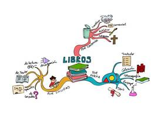

Tipos de tecnicas:
image
Técnicas visuales
Son todas aquellas herramientas que incluyen cuadros, gráficos, imágenes donde se visualizan conceptos y se aprende a través de ellos. Actualmente se utilizan mucho los mapas mentales o infografías.
speaker
Técnicas auditivas
Se utilizan recursos auditivos como dictados, música, videos, detates. A través de la audición el sujeto recuerda cualquier tipo de información.
group
Técnicas Kinestésicas
Esta técnica utiliza la interacción social, donde se percibe la información a través de la experiencia y de interactuar con otras personas.
Algunas Técnicas de Aprendizaje:
Un mapa mental es un diagrama usado para representar palabras, ideas, tareas, lecturas, dibujos, u otros conceptos ligados y dispuestos radicalmente a través de una palabra clave o de una idea central.
El mapa conceptual consiste en una sinopsis gráfica sobre un tema en concreto. Es una técnica usada normalmente por estudiantes para resumir y contemplar fácilmente todas las partes y ramificaciones de un tema y sus relaciones.
Consiste en poner una o más líneas debajo de las ideas principales, secundarias o todos aquellos detalles que queremos destacar. También puedes utilizar otros signos convencionales (interrogación, asteriscos…) o anotaciones en el margen.
El resumen es la exposición breve de lo esencial de un tema o materia, tanto efectuada de manera oral como escrita. Consiste en reducir o sintetizar el contenido de una lectura, texto, documento o de una exposición oral.